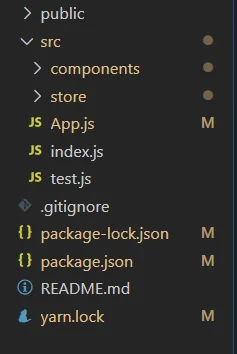
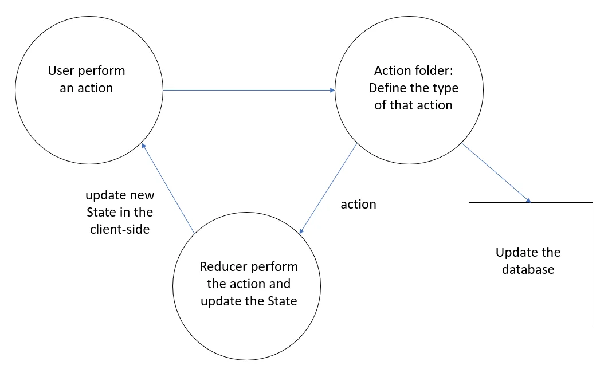

This is going to be the first technical blog that I write and it is going to be super long but very helpful. Stay tuned !!
What is M.E.R.N ?
This is a "stack"(combination) of different languages and technologies used to create a software or program. It is in short for MongoDB, Express, React, and Nodejs (Don't worry about these things yet I will explain them in just a moment)
The M.E.R.N stack uses
- MongoDB as our database, storing information
- Express and NodeJS to build the server (backend) to our website
- React as our client-side (frontend)
What do we need in a blog ?
I believe there are 3 major steps of creating a simple blog (I am just a beginner so dont judge me if I miss any parts)
- A CRUD (Create, Read, Update, Delete) function for your posts
- Craft and store your posts in a store
- Launch and maintain your blog !!
Let's get to creating our app !!
1. Create a React application
Assume that you already have an editor (I prefer to use Visual Studio Code). Create a new folder to contain your app.
You will need to install NodeJs beforehand
There is an alternative for running the React App instead of npm (Nodejs Package Manager) which is Yarn and I also prefer to use this.
So I will create a new React App
yarn add create react-app (your app name)
cd (your app name)
yarn start
2. Install necessary dependencies
Dependencies are similar to library that can add additional features to your app and here we are going to install the following dependencies: react-router, react router-dom
In order to use react-router and react-router-dom, you need to import and inject a BrowserRouter in the index.js file such as below
import { BrowserRouter } from "react-router-dom";
ReactDOM.render(
<BrowserRouter>
<Provider store={store}>
<App />
</Provider>
</BrowserRouter>,
document.getElementById("root")
);
Now we start crafting our React application
Creating forms for CRUD (Add function)
Handling Forms is probably the most important step in the frontend side. Here I will create 2 components which is AddPost to handle adding new posts and PostList to render all the posts we have. You should structure the folders so that you have a component folder to store all your components.

Below is the setup for my AddPost component. Here we will pass an addPost as a props which later we will pass the actual function to add new post from the main App component. This component will return a form that includes 3 inputs for 3 main values of a post which are title, headline and content.
I also use the standard form handling which is setting a postInfo state that carries the attributes of the new post which are title, headline and content. Whenever an input is changing (when the user is entering information) the postInfo will receive that value and update the state.
const AddPost = (props) => {
const {addPost} = props
// const id = useSelector((state) => state.ListPosts.length + 1)
const dispatch = useDispatch()
const [postInfo, setPostInfo] = useState({
// id: id,
title: "",
headline: "",
content: ""
})
const onSubmitHandler = (e) => {
e.preventDefault()
addPost(postInfo)
setPostInfo({
title:"",
headline:"",
content:""
})
}
return (
<div>
<form onSubmit={onSubmitHandler}>
<input
type="text"
name="title"
placeholder="Enter title"
value={postInfo.title}
onChange={(e) => { setPostInfo({ ...postInfo, title: e.target.value }) }}
/>
<input
type="text"
name="headline"
placeholder="Enter headline"
value={postInfo.headline}
onChange={(e) => { setPostInfo({ ...postInfo, headline: e.target.value }) }}
/>
<input
type="text"
name="content"
placeholder="Enter content"
value={postInfo.content}
onChange={(e) => { setPostInfo({ ...postInfo, content: e.target.value }) }}
/>
<input type="submit" value="Submit"/>
</form>
So after the postInfo state receive all the updated information and we submit the form, it will triggered the function addPost with the information in postInfo
Therefore, outside the App.js file, we will return the AddPost component within the PostList component, receiving function addPost as props
const PostLists = (props) => {
const addPost = (postInfo) =>{
const newPost = postInfo
dispatch(actionCreators.addPostToServer(newPost))
}
return (
<div>
<AddPost addPost={addPost}/>
<div>
}
So what is the dispatch in the image above. I will explain it below.
3. Setting up the Redux Store
Since state management is quite tiring between the components, I decided to use Redux and some advanced Redux including asynchronous functions. Therefore, I decided to keep all my posts as a ListPosts state in the Redux store
Traditionally, in the class based components, we usually have to set up complex things such as mapStateToProps, mapDispatchToProps, connect, ... to make redux work. However, React Hooks give us equivalent but handier way to handle redux. We will apply useSelector (mapStateToProps equivalent) and useDispatch (mapDispatchToProps).
1. Setting in the index.js file
This is quite a lot of work so I wouldnt come into too much detail in the post. First, we will need to install react-redux and redux dependencies. After that, we import createStore and Provider from react-redux. I recommend using an extra middleware (in my case, it is the logger function) (a function runs just before a state is changed) to monitor the state as we go along. Below is my complete setup for the index.js file without the imports
const composeEnhancers = window.__REDUX_DEVTOOLS_EXTENSION_COMPOSE__ || compose;
const logger = (store) => {
return (next) => {
return (action) => {
console.log("[Middleware] Dispatching", action);
const result = next(action);
console.log("[Middleware] next state", store.getState());
return result;
};
};
}; //middleware
const store = createStore(
reducer,
composeEnhancers(applyMiddleware(logger, thunk))
);
ReactDOM.render(
<BrowserRouter>
<Provider store={store}>
<App />
</Provider>
</BrowserRouter>,
document.getElementById("root")
);
You can see that we wrap our App with 2 things the Provider with the store (for the redux store) and the BrowserRouter for the route usage in our app
In our store, you add a middleware logger and a thunk (from redux thunk) in order to enable use using asynchronous code from the action folder of the Redux store later
2. Setting in the action folder
The action folders hold all the actions of a redux store (it is not recommended that you perform logic here). So we will define all of out actions in the action file such as create, read, update and delete
Here is an example that I set up the create function in the action folder.
export const ADD_POST = "ADD_POST";
export const addPost = (newPost) => {
return {
type: ADD_POST,
newPost: newPost,
};
};
export const addPostToServer = (newPost) => {
return (dispatch) => {
Axios.post("http://localhost:5000/posts/add", newPost)
.then((res) => {
console.log("add to database success");
dispatch(addPost(newPost));
})
.catch((err) => {
console.log(err);
});
};
};
The upper function addPost is used to add a new post to both the ListPosts state in the store and to the database in the server (which I will mention later)
Usually we would only defined the actions the in the action folder. However, I am using a very cool dispatch technique that allows me to perform asynchronous functions in the action folder. What I am doing here is that I am using Axios to call api to my server (which I will show you how to set up later) and update the database of my newest post.
3. Setting the reducer
This is probably the most important part of our Redux store. After receiving the action's definition and payload (additional information that comes with the action), it will perform all the actual functions here in the reducer (No asynchronous functions here)
const initialState = {
ListPosts: [],
SearchList: [],
MailList: [],
};
const reducer = (state = initialState, action) => {
switch (action.type) {
case actionTypes.ADD_POST: {
return {
...state,
ListPosts: state.ListPosts.concat(action.newPost),
};
}
}
};
Inside the reducer, as I have mentioned before, I set a global state ListPosts to store all the posts that would be rendered to the screen.
Every time the action add new Post is dispatched, it will execute the asynchronous functions in the action, updating the database and then it will go through the reducer, performing the action of adding a new post to the global state ListPosts. So here we update both the ListPosts state and the database. The image below should help you out a bit with this action flow :))

There, we are pretty much done with the Add new post function in the client-side.
Creating a server for the website using Nodejs and Express
I will create another folder called backend in my project and a file server.js inside that folder. This file will hold all of my server for the website. The settings are right below:
const express = require("express");
const app = express();
const bodyParser = require("body-parser");
const cors = require("cors");
app.use(cors());
app.use(bodyParser.urlencoded({ extended: true }));
app.use(bodyParser.json());
app.listen(5000, (err) => {
if (err) {
console.log(err);
} else {
console.log("server start success");
}
});
With all of the settings, our server is up and loaded at port 5000 of our localhost. Which means that in a way or another, even though your website is not hosted yet, you are not running your app in your computer but on the internet now. Cool right !
I will start the server using the code below
node server.js
Our server is completed and now we are going to set up our MongoDB database and connect it to our server.
Setting up the database using MongoDB Compass
You will have to install the latest stable version of Robo3T and MongoDB Compass in order to setup the database. Once you have installed and set everything up, your database should look like this:
Typically, your connection will be localhost:27017 so you will be able to create a new database inside the connection. I create my own database and named it "ListPostsBlog". Inside the database, there will be different collections and each collection should serve its own purpose. For example, I will have a collection ListPostsForBlog where I will store all my posts as documents like below
If you get here, it means that you have successfully set up the database and it is ready to use.
Connecting the database to the server
app.use(function (req, res, next) {
res.header("Access-Control-Allow-Origin", "http://localhost:3000"); // update to match the domain you will make the request from
res.header(
"Access-Control-Allow-Headers",
"Origin, X-Requested-With, Content-Type, Accept"
);
res.header("Access-Control-Allow-Methods", "GET, POST, OPTIONS, PUT, DELETE");
next();
});
mongoose.connect(
"mongodb://localhost/ListPostsBlog",
{
useNewUrlParser: true,
useUnifiedTopology: true,
},
(err) => {
if (err) console.log(err);
else console.log("DB connect success!");
}
);
We use the app.use function to connect the backend side (which runs at localhost:5000) to our client side (which runs at localhost:3000). Then we use mongoose, an updated library developed from mongodb to connect to our database. Notice that the link 'mongodb://localhost/ListPostsBlog' must be precise in terms of connection and database name. (my database name is ListPostsBlog)
Structuring MongoDB
Since MongoDB is a database, it allows us to structure the data inside and assign them types and other attributes
similar to Microsoft Access that I learnt in grade 12 (something I see as really valuable) but MongoDB is NoSQL type database.
Below I construct my database for 3 main components of a blog using Schema (supported by Mongoose): title, headline and content (I assume...). This should be put in your model folder in your backend folder.
const PostSchema = new Schema({
title: {
type: String,
required: true,
},
headline: {
type: String,
required: true,
},
content: {
type: String,
required: true,
},
});
module.exports = mongoose.model("Post", PostSchema);
This file will export a PostSchema (Post Attributes you can say) for each Post that I create. Thus, we can import this PostSchema to other files we are about to use.
Setting up more routers to call API
What is API ?
API is in short for Application Programming Interface, which is a standard protocol that developers use to transfer information. Lets say if you are doing actions in a website, the server wont get all the "raw data" that you are changing but different APIs of get, post, put, delete, ... and then process the APIs and send you back responses(More can be found Here)
Since in our client-side React-app such as the add new post function above, we use Axios to call and post new data to our server.
Axios.post("http://localhost:5000/posts/add", newPost)
.then((res) => {
console.log("add to database success");
dispatch(addPost(newPost));
})
.catch((err) => {
console.log(err);
});
Therefore, right now in the server, we have to write routers to catch and process those APIs. So we will write a new router for rendering all the posts (get function) and creating new post
PostRouter.get("/", (req, res) => {
ListPosts.find((err, posts) => {
if (err) {
console.log(err);
} else {
res.json(posts);
}
});
});
PostRouter.post("/add", (req, res) => {
const post = new ListPosts(req.body);
post
.save()
.then((post) => {
res.status(200).json({ post: "Post added successfully" });
})
.catch((err) => {
res.status(400).send("unable to save to database");
});
});
Here the ListPosts is extracted from the database.
- GET: the get-router is pretty simple, we will find in the database and render out all the data
- POST: the post-router always come with the information of the new post (remember when we dispatch addnewPost action, we send the newest postInfo as additional information). So we will get that information using req.body (body of the our request), create a new Post using the type in the PostSchema and upload it to the database.
So we are done with the Post function (sounds really complex despite the simple click we do on websites everyday right :)) )
Render our ListPosts (Read function)
Here, we will render out all the posts in our global state ListPosts in the redux store. I will use the React Hook useEffect as a cleanup function, which is whenever the ListPosts state is changed, we will get the latest data from the database and pass it down to the ListPosts state.
const listPost = useSelector((state) => state.ListPosts);
const fetchData = async () => {
const response = await fetch("http://localhost:5000/posts");
const resJson = await response.json();
return resJson;
};
const listPost = useSelector((state) => state.ListPosts);
const [invalidate, setInvalidate] = useState(true);
const dispatch = useDispatch();
useEffect(() => {
if (invalidate) {
fetchData()
.then((res) => {
dispatch(actionCreators.updateListPost(res));
// setListPost(res)
setInvalidate(false);
})
.catch((err) => {
console.log(err);
});
}
}, [invalidate]);
Since the useEffect hook will run whenever the value in the array is changed (here is invalidate changes), it will automatically dispatch to the action updateListPost in the action and get the newest data from the database
listPost.map((post, index) => {
return (
<div>
<Link to={`/posts/${post._id}`}>
<Post
key={index + 1}
title={post.title}
headline={post.headline}
/>
</Link>
<button onClick={() => deletePost(post, post._id)}>Remove</button>
<UpdatePost index={index} post={post}/> {/*UPDATE POST*/}
</div>
From there, we can easily render all the posts in the ListPosts state out to the screen easily using the map function. As you noticed, every time we render a post, we also add a delete button and a Update Component so that we can perform our delete and update functions.
Delete Function
All delete function always go with the id of the post we are deleting. So when we click the button "DeletePost above", we will dispatch the action below.
const deletePost = (post, _id) => {
dispatch(actionCreators.deletePostFromServer(post, _id))
}
listPost.map((post, index) => {
return (
<div>
<Link to={`/posts/${post._id}`}>
<Post
key={index + 1}
title={post.title}
headline={post.headline}
/>
</Link>
<button onClick={() => deletePost(post, post._id)}>Remove</button>
</div>
Again we are reaching to our Redux store, search for the action "DELETE_POST", delete the post from the database in our server and then go to our Reducer and update the new state for the ListPosts, just as we do with the add new Post function
Here is my action folder:
export const deletePost = (post, _id) => {
return {
type: DELETE_POST,
post: post,
_id: _id,
};
};
export const deletePostFromServer = (post, _id) => {
return (dispatch) => {
Axios.delete(`http://localhost:5000/posts/delete/${post._id}`)
.then((res) => {
dispatch(deletePost(post, _id));
})
.catch((err) => {
console.log(err);
});
};
};
As you notice, we still use Axios to call API to our server and pass down the 2 things in the delete function the actual post (so that later in the reducer we can use it to get the id of the post in the reducer) and the _id which is the id the Mongodb database automatically generate for us.
Now we have successfully delete it in the database, we will update the state of ListPosts inside the redux store in the reducer file.
case actionTypes.DELETE_POST:
{
const newListPost = state.ListPosts.filter((post)=> post._id != action._id)
return{
...state,
ListPosts: newListPost
}
}
We use the filter method and comparing the action (that will just passed down) id with the id from all the posts and remove the right post.
Update Function
This is the last main function of our app and to be honest it is a bit similar to how we do with the create function. We begin by creating an UpdatePost component
const UpdatePost = (props) => {
const { post, index } = props
const dispatch = useDispatch()
const [postInfo, setPostInfo] = useState({
title: "",
headline: "",
content: ""
})
const onSubmitHandler = (e) => {
e.preventDefault()
const newPost = {
_id: post._id,
title: postInfo.title,
headline: postInfo.headline,
content: postInfo.content
}
Axios.post(`http://localhost:5000/posts/update/${newPost._id}`, postInfo)
.then((res) => {
console.log(res)
})
.catch((err) => {
console.log(err)
})
// dispatch(actionCreators.updatePostServer(newPost, index))
setPostInfo({
title: "",
headline: "",
content: ""
})
}
return (
<div>
<form onSubmit={onSubmitHandler}>
<input
type="text"
name="title"
placeholder="Enter title"
value={postInfo.title}
onChange={(e) => { setPostInfo({ ...postInfo, title: e.target.value }) }}
/>
<input
type="text"
name="headline"
placeholder="Enter headline"
value={postInfo.headline}
onChange={(e) => { setPostInfo({ ...postInfo, headline: e.target.value }) }}
/>
<input
type="text"
name="content"
placeholder="Enter content"
value={postInfo.content}
onChange={(e) => { setPostInfo({ ...postInfo, content: e.target.value }) }}
/>
<input type="submit" value="UpdatePost" />
</form>
You can see it is nearly identical to our add new post function. First we need to create 3 forms to handle the change of 3 main attributes of our post title, headline, and content.
We will also set a postInfo state to contain the updated information in each post and whenever the input is changing (the user is entering new information), this state will be updated. Then we will store the postInfo information along with the _id from the post that we pass a props for the UpdatePost component in an object newPost
Finally, we use Axios to call to our API to post a new post to the exact id of the old post and we have updated it successfully.
Additional Functions
Search Form
This is also a function that is used a lot when people are reading posts so I will show you how to add a search function in your app.
The core of the search function is that we will create a form. After the user submits that form (pressing search), we will filter our global state ListPosts all the posts that have the titles that include the value of the form. After getting a filtered list, we will create another global state called SearchList to contain the new list. We must do this because if we filtered directly in the main ListPosts state, it will automatically remove your posts whenever you search them.
So first in the Redux store, I will create another global state called SearchList
const initialState = {
ListPosts: [],
SearchList: [],
};
Now we will create a SearchForm component to store our search function.
const SearchForm = (props) => {
const { searchPost } = props;
const [value, setValue] = useState("");
const [fireRedirect, setFireRedirect] = useState(false);
const dispatch = useDispatch();
// const useQuery = () => {
// return new URLSearchParams(useLocation().search);
// };
// const query = useQuery();
const onSubmitHandler = (e) => {
e.preventDefault();
setFireRedirect(true);
searchPost(value);
// dispatch(actionCreators.searchPost(value))
};
return (
<div>
<form onSubmit={onSubmitHandler}>
<input
type="text"
value={value}
onChange={(e) => setValue(e.target.value)}
/>
<button type="submit">Search</button>
</form>
{fireRedirect && <Redirect to={`/posts/?name=${value}`} />}
{/* <button onClick={() => dispatch(actionCreators.clearSearchList())}>Refresh</button> */}
</div>
);
};
First, we still handle the forms in the standard way, creating a state that holds the value of the form and whenever the input is changing we will update the state with the corresponding value.
We also set a function searchPost as a props of this component along with the new value that was just updated.
So what does the fireRedirect do ?
Well, this will help us redirect our page to the link "..../posts/?name=" similar to when we perform a query (search) on Google. For example if I searched "hello" on Google, I will be taken to the path "www.google.com/search?q=hello".
So I will do just as usual, dispatch the action SEARCH_POST. Here is my action folder:
export const searchPost = (value) => {
return {
type: SEARCH_POST,
value: value, //action payload dc gắn giá trị newPostListSearch
};
};
In my reducer I will set my newly created global state SearchList as the filtered ListPosts.
case actionTypes.SEARCH_POST:
{
const newPostListSearch = state.ListPosts.filter((post) => post.title.toLowerCase().includes(action.value.toLowerCase()))
return{
...state,
SearchList: newPostListSearch
}
}
And so we are done with the search function
Conclusion
So we have officially done with our M.E.R.N stack app. If you want to look at the source code you can find it Here. It is a basic web and has no styling at all yet :)) so sorry for that.
This is the end of my first super long post, I hope you enjoyed it and learnt something new from it. Hope I can receive more support in the future !!